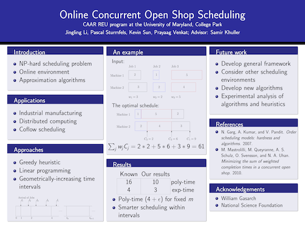

I am undergraduate computer science student at the University of Michigan. My previous research has invovled developing sequencing visualizations from computational biology experiments and novel algorithms for NP-hard scheduling problems. I currently work in machine learning applied to medical imaging. Keep reading to learn more about my experience and academic history. NEWS: I am excited to be nearly done with Avalanche for the iPhone. It will be released shortly! In my spare time, I enjoy reading and doing origami. I am also an avid basketball and soccer player. Check out my CV, LinkedIn and GitHub at the circle links below.
With the MLD3 lab at the University of Michigan, I develop novel techniques to understand neuroimages. I am interested in understanding how the brain ages with respect to environmental conditions, and how we can develop models that learn the relationship between brain images and brain age. I am also interested expanding augmentation techniques for brain images.
I developed a framework in Spark to stress test a client-facing SQL system. I developed a pipeline to more efficiently query gigabytes of financial data on the cloud. I also implemented a modular system that automatically monitored my team's cloud usage, and scaled cloud resources down during periods of inactivity. This reduced our team's expenditure on cloud resources by up to 30%.
I developed a novel application using mesh-networking technology that communicates between phones using peer-to-peer WiFi. The application successfully demonstrated infrastructure-less, censorship-resistant communication.
I participated in the CAAR REU at the University of Maryland. My group and I demonstrated a novel scheduling framework for NP-hard scheduling problems. This framework improved upon the best known approximation algorithms and has applications in job-scheduling models like MapReduce. I presented the following poster at a research symposium hosted by national science foundation. 
I worked for a year with the Pachter Lab developing next-generation sequencing software. I developed a system to automatically analyze and visualize results from published papers. This work was published in BMC Bioinformatics, and promotes reproducibility in the field.
GPA: 4.00 EECS Scholar James B. Angell Scholar
Coursework: Machine Learning Natural Language Processing Computer Vision
I taught the foundations of machine learning: support vector machines, linear regression, ensembles and boosting, deep learning, clustering and probabilistic graphical models.
I covered the foundations of computer science theory: turing machines, decidability and complexity. I also covered standard algorithm paradigms: greedy, divide and conquer, dynamic programming and graph algorithms.
Apart from doing research in machine learning, I am an active game developer. I am working remaking and revamping an old flash game for the iOS platform, which should be released in January 2018. Although that particular game is done in swift with SpriteKit, I now do most of my game development in Unity. I enjoy making collaborative multiplayer games and puzzle games, but am not limited to a particular genre. NEWS: I am excited to be nearly done with Avalanche for the iPhone. It will be released shortly!
I take an active role in the Michigan Student Artificial Intelligence Lab , where I lead discussion groups and give presentations about machine learning. Occasionally, I use the computer science department's money to order free food for our members. It turns out they don't really mind as long as we use the food to fuel interesting discussion about the latest machine learning papers.